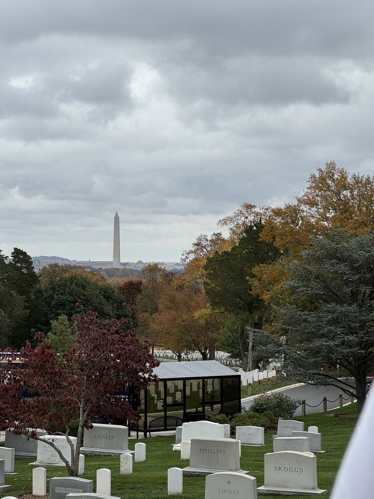

1.
Автобус в Вашингтон и гид Дэвид
На второй день мы уехали из Нью-Йорка. Экскурсия в Вашингтон на автобусе, бронировали через GetYourGuide. Гида звали Дэвид. Английский у него был не самый лучший, а экскурсия была отличная. Так бывает: человек знает, о чём говорит, и этого хватает.

